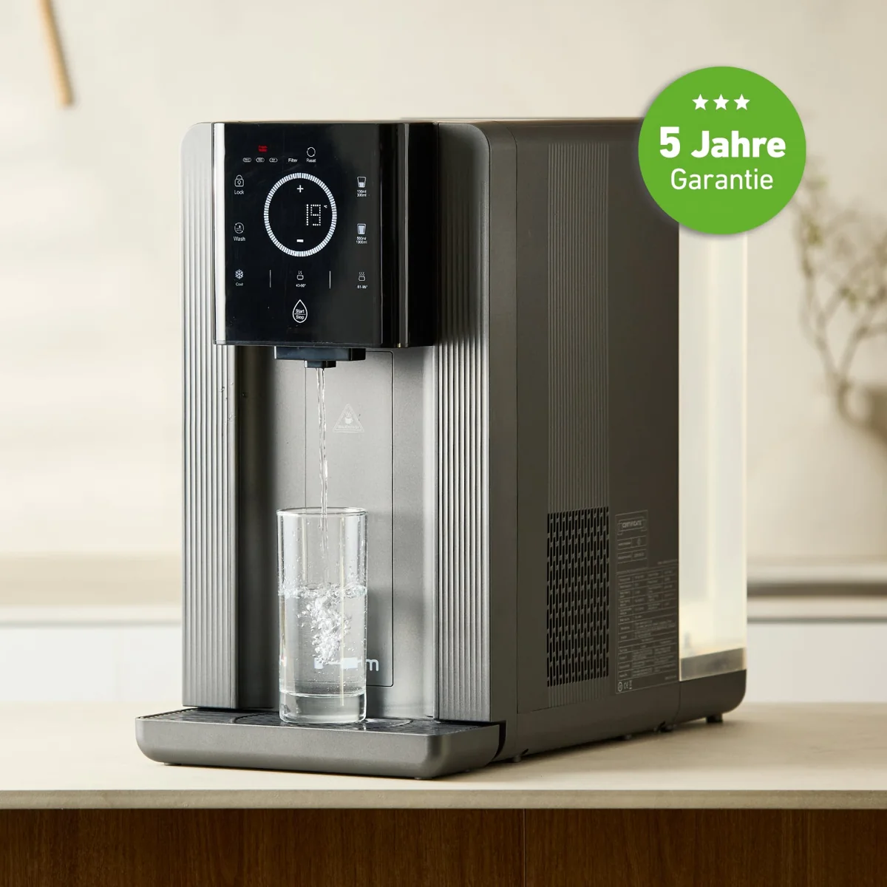

Countertop RO
Wasserladen WP-A01 | All in One Umkehr Osmose Auftischfilter
Brandneu: Hurom WP-A01 Umkehr-Osmose-System für reinstes Wasser ohne Festwasseranschluss. Mit Kühlung (4°C), Heißwasser & UV-Pflege. Jetzt die All-in-One Lösung entdecken!.
599,00 €
Technische Daten
| Artikel-Nr. | A002362 |
| Hersteller | Hurom Europe GmbH |
| Typ | Wasserfilter > Umkehrosmoseanlage > Auftisch Osmoseanlage |
| Gewicht | 14.0 kg |
| Merkmal | Spezifikation |
| Modell | Hurom WP-A01 |
| Farbe | Grau |
| Maße (B × T × H) | 24,8 × 48,2 × 43,2 cm |
| Spannung / Frequenz | 220–240 V / 50–60 Hz |
| Leistungsaufnahme | Gesamt: 2.200 W (Heizen: 2.100 W / Kühlen: 90–120 W) |
| Temperaturbereich | Einstellbar von 4 °C bis 95 °C |
| Filtersystem | 3-stufig (PAC / RO / CF) |
| Filter-Lebensdauer | PAC: 6–12 Mon. / RO: 12–24 Mon. / CF: 6–12 Mon. |
| Durchflussmenge | Gereinigt: 30 L/h | Heiß: 18 L/h | Gekühlt (≤12°C): 0,8 L/h |
| Tankvolumen | 8,5 Liter (6 L Leitungswasser / 2,5 L Abwasser) |
| Umgebungstemperatur | 5 °C bis 38 °C |
| Lieferumfang | Hauptgerät, Wassertank, Tropfschale, 3er Filter-Set (PAC, RO, CF) |
| Anschrift | Weberstraße 19 65779 Kelkheim |
| Website | https://www.hurom-europe.com/de/ |
Beschreibung
Brandneu: Hurom WP-A01 Umkehr-Osmose-System für reinstes Wasser ohne Festwasseranschluss. Mit Kühlung (4°C), Heißwasser & UV-Pflege. Jetzt die All-in-One Lösung entdecken!.
Datenhinweis
Preis, Bild und technische Angaben stammen von der verlinkten offiziellen Produktseite. Varianten und Verfügbarkeit können sich ändern.